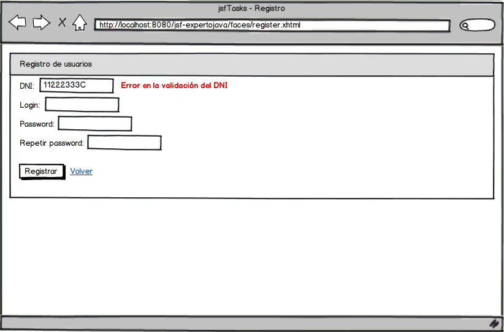

Ejercicios sesión 3 - Funcionamiento y arquitectura de JSF
Conversores y validadores
En esta sesión, vamos a aplicar los conocimientos adquiridos en la creación de una página de registro de usuario. Ésta tendrá un aspecto similar al del siguiente mockup:

La vista deberá llamarse register.xhtml, y utilizar la misma plantilla que la página de login (0.25 puntos).
Crearemos una clase es.ua.jtech.jsf.RegisterController, que tendrá los siguientes atributos (0.25 puntos):
- DniBean dni.
- String login.
- String pass.
- String pass2
Para la clase DniBean, deberemos crear sus conversores y validadores (0.5 puntos)
Los campos del formulario deberán tener las siguientes restricciones, que deberás controlar aplicando las anotaciones de JSR303 en la medida que sea posible (0.5 puntos)
- Todos los campos son obligatorios
- login: longitud mínima, 4 caracteres; longitud máxima: 12 caracteres
- pass: longitud mínima, 6 caracteres; longitud máxima: 12 caracteres
Además, introduciremos dos eventos postValidate en nuestra vista (0.75 puntos):
- El primero de ellos se encargará de verificar que los passwords introducidos coinciden
- El segundo, se encargará de verificar que no existe ningún usuario registrado con ese login. Como no tenemos base de datos, con verificar que el login no es admin será suficiente
El botón de registro llamará a un método doRegister del controlador, que nos "registrará" al usuario y lo dará de alta en sesión, llevándolo a su página de tareas (0.25 puntos).
Por último, nuestra aplicación deberá ser capaz de mostrar cada mensaje de error al lado del campo que lo haya ocasionado (0.5 puntos). Para resaltar un poco más el error, le daremos el siguiente estilo: color:#B94A48; font-weight: bolder